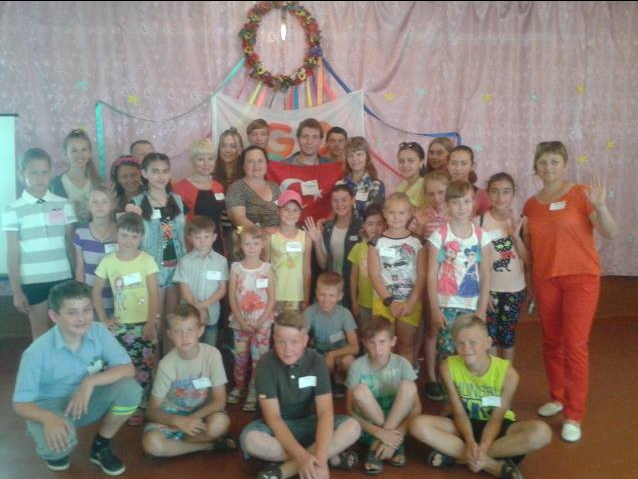

| Home | Local Dishes | Historical Places | Useful links | About me | Contact me | Registiration |
|---|
I am second grade student at Anadolu University.I was born in 1995.I like coding, traveling, playing chess, passing time with children, preparing food and also to listen Burcu Yılmazel lectures.
